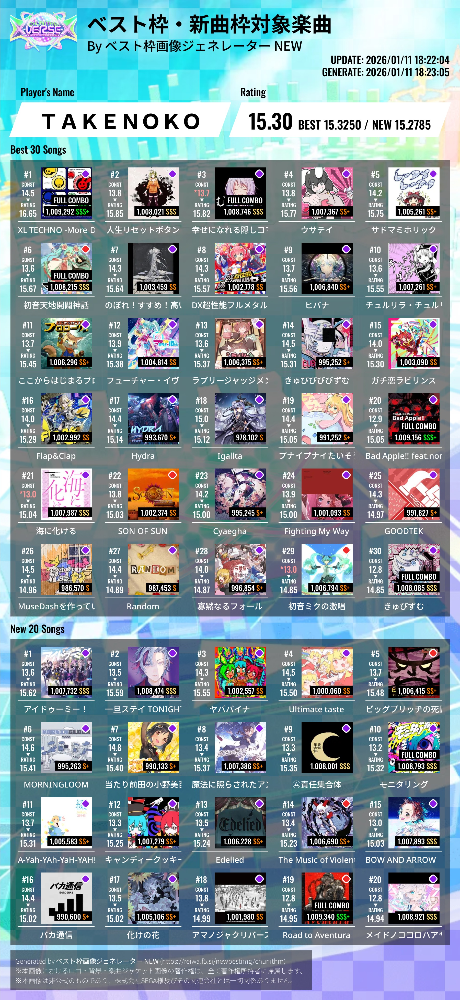

初ブログ書いてみた
はじめまして。
このブログを見てくれてありがとうございます。
記念すべき最初の記事です。
自分について
たけのこです。
現在は東京科学大学の情報理工学院の数理計算科学系に所属しています。
カービィとバンドリと学マスが大好きです。
↓これはかわいい麻央先輩。

このブログについて
このブログをつくった理由は4つあります。
1つ目は、日々の記録を残すためです。
日記というものを書いたことがなかったので、続くかは分からないけど挑戦してみようと思いました。
2つ目は、日課を作ろうと思ったからです。 普段バランスの悪い生活をしているので、できれば毎日、少なくとも二日に一回は記事を書きたいです。
3つ目はプログラミングに慣れるためです。
このブログは自分でHTMLとCSSを書いて作成しています。まだまだ初心者ですが、少しずつ上達していきたいです。
その他の言語もたくさん勉強していきたいです。
4つ目は文章を作る力をつけたいからです。
将来的にはレポートや論文を書いたりするので、今のうちに練習しておきたいです。
今年の抱負
2026年になって二週間ほどたってしまいましたが、今年の抱負を書いていきます。
いくつかの分野で書いていきます。
学業
- 大学に行く
- 日常的に勉強する
- プログラミング言語を10個習得する。
去年は精神的にしんどくて大学に行けなかったから、無理してでも大学に行きたい。
去年は勉強も全然モチベがなくてできなかった。単位も絶対に落とさないこと。
今使っているhtml/cssやJavaScriptはもちろん、定番のPythonやC言語、新しめのRubyやGo言語も学びたい。
ゲーム
- CHUNITHMで虹レになる。
- 太鼓の達人で超人合格
- MuseDash達人+裏11以下制覇
去年の12月から始めたCHUNITHM、現在(1/13)ではレートが15.30なので、今年はもっと上を目指したい。
↓1/13時点でのレート

去年念願の名人に合格し、さらに金枠金名人も合格したので、この勢いで超人も合格したい。
↓11/14名人合格！


 ↓12/14金枠金名人合格！！！！！！うまい！！！！
↓12/14金枠金名人合格！！！！！！うまい！！！！


現在750譜面ある達人+裏11以下の譜面のうち470譜面はAPしているので、あと280譜面くらい頑張りたい。せめて10以下は制覇したい。
拙い文章だけど、これからよろしくお願いします。